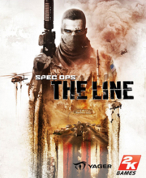

|  | |
| Tiempo de juego | No Jugado |
| Última actividad | Nunca |
| Añadido | 11/6/2024 15:27:56 |
| Modificado | 11/17/2024 14:37:09 |
| Estado de finalización | No Jugado |
| Librería | Playnite |
| Fuente | 1 TB 1 |
| Plataforma | PC (Windows) |
| Fecha de lanzamiento | 6/26/2012 |
| Puntuación de la Comunidad | |
| Puntuación de la Crítica | 77 |
| Puntuación de usuario | |
| Género | Third-person shooter |
| Desarrollador | Yager Development |
| Editor | 2K |
| Característica | Multiplayer Single-player |
| Enlaces | Wikipedia Official website |
| Tag | [Game Engine] Unreal Engine 3 [People] artist: Jason Flanagan [People] artist: Mathias Wiese [People] composer: Elia Cmíral [People] designer: Cory Davis [People] director: Cory Davis [People] director: Francois Coulon [People] producer: Tarl Raney [People] programmer: André Dittrich [People] programmer: Hendrik Hoenicke [People] writer: Richard Pearsey [People] writer: Walt Williams |
Spec Ops: The Line is a 2012 third-person shooter video game developed by Yager Development and published by 2K. It is the seventh title, as well as a reboot, of the Spec Ops series. In the game, players can hide behind cover, vault over obstacles, and shoot enemies while utilizing a variety of gadgets. Included with the game is an online multiplayer mode, developed separately by Darkside Game Studios, allowing players to engage in both cooperative and competitive gameplay. The player controls Captain Martin Walker, who is sent into a post-catastrophe Dubai with an elite Delta Force team on a recon mission. As the story progresses, Walker's sanity begins to deteriorate as he begins to experience hallucinations and slowly realize the horror of war.
Yager started the game's development in 2007, taking inspiration for the setting and story framework from various media, including Joseph Conrad's 1899 novella Heart of Darkness and the 1979 film Apocalypse Now. The game was designed to be "physically opposing", causing players to question their thoughts about treating war in a video game as entertainment, and tasks players to make a variety of morally ambiguous decisions. The game suffered from multiple delays, and the development team used this time to refine the story and increase the gameplay's pace. The game's soundtrack is a mix of licensed music and original music composed by Elia Cmíral. The game was banned in the United Arab Emirates for its depiction of Dubai in a state of destruction.
Announced in December 2009, the game was released internationally in June 2012 for Windows, PlayStation 3 and Xbox 360. Spec Ops: The Line received generally positive reviews from critics with praise given for the narrative and its themes, while criticism was targeted at the online multiplayer and aspects of the gameplay. It was also awarded and nominated for several end-of-the-year accolades, particularly for its story, and has garnered a cult following in the years after its release and is considered an example of video games as an art form because of its meta narrative, political commentary and emotional impact.[citation needed] Despite this, the game was a commercial failure, which led to the announcement that there would not be a sequel to the game, effectively ending the Spec Ops series. The game was delisted from sales in January 2024.
The player can select from four difficulty levels: Walk on the Beach, Combat Op, Suicide Mission, and the hardest difficulty, FUBAR, which is only unlocked after completing the game on Suicide Mission. Various new weapons and equipment become available as the game progresses, some dropped by downed enemies. These include several different rifles, handguns, and machine guns. Some offer alternate firing modes, like attaching a suppressor or using a telescopic sight. Players can also acquire and make use of grenade launchers, hand grenades, and rocket launchers. However, the player can only carry two weapons at a time. Supply caches can be found in different parts of the game, allowing the player to refill their ammo and grenades. Whenever the player successfully shoots an enemy in the head, the game enters a slow-motion mode for a short period of time. The player can also defeat enemies at close range via melee combat. Dying enemies can be executed, which grants the player additional ammo. Hiding behind cover can provide protection and prevents the player from being shot, as well as providing opportunities to blindfire or lean out to shoot enemies.
As a third-person shooter with an emphasis on squad-based tactics, players can issue commands to Sergeant Lugo and Lieutenant Adams, who accompany the player for most of the game. Available commands include focusing fire on one particular target and ordering medical attention for an injured squad member. Adams can defeat enemies by using heavy gadgets or throwing grenades, while Lugo provides sniping assistance. Environmental hazards like sandstorms occasionally occur, drastically reducing the player's vision and visibility. Sand becomes a key gameplay mechanic and players can manipulate it at scripted moments in the game, such as triggering a sand avalanche to bury enemies alive. When a grenade explodes on sand, dust clouds that can blind enemies are formed. Sand sometimes opens up new paths to allow players to progress.
The player needs to make moral decisions at certain points during the game, including making choices that can determine the fate of both soldiers and civilians. These decisions affect the relationship between the player character Martin Walker and his squadmates, and will cause them to react differently. The game incorporates several subtle effects to visualize the lead character's increasing mental and physical distress; alongside the degradation of their combat uniforms, Walker suffers visual and auditory hallucinations later in the game, and his executions of enemies become more violent. The orders and shouts to his team become increasingly angry and ragged in contrast to his stern but collected orders at the outset. His kill confirmations of enemies corrupts from professional in the beginning to psychotic. Similarly, loading screens initially display helpful gameplay hints for the player, but as the game progresses, the text becomes increasingly hostile towards Walker's actions, and sometimes breaks the fourth wall by addressing the player directly.
In nearly every level, players can collect Intel items that provide the player with information on the events preceding the main story, as well as insight into the psyche and motivations of certain characters.
Set before the events of the campaign, the competitive multiplayer divides players into two different teams: The Exiles and The Damned. Both teams have their respective perks. Six classes are available for players to choose: Gunner, Medic, Scavenger, Breacher, Sniper and Officer. Each have their own upgrades and advantages. Environmental hazards, including sandstorms, may also occur during a multiplayer match. The game modes featured in the multiplayer include:
A two player cooperative mode was added to the game after its launch with four missions to choose from. Players are tasked to defeat multiple waves of enemies and complete a series of objectives, similar to a horde mode.
Six months prior to the game's events, the worst series of sandstorms in recorded history began across Dubai. The city's politicians and wealthy elite downplayed the situation before secretly evacuating, leaving countless Emiratis and foreign migrant workers behind as the city was overwhelmed by the surrounding desert. Colonel John Konrad (Bruce Boxleitner), the decorated but PTSD-troubled commander of the "Damned 33rd" Infantry Battalion of the United States Army, was returning home with his unit from Afghanistan when the storms struck. Konrad volunteered the 33rd to help relief efforts, defying orders by the Army to abandon the city and its refugees and deserting with the entire battalion. The storms intensified and a massive storm wall engulfed Dubai, disrupting surveillance, air travel, and all but the strongest of radio broadcasts. Struggling to maintain order amid 80 mph (128 km/h) winds, riots, and dwindling resources, the 33rd declared martial law and began committing atrocities on the civilian population. Aggrieved by this, the staff of the 33rd staged a coup d'etat against Konrad but were defeated, while the remnants are branded as "the Exiled". The CIA then sent in a black ops squad to investigate, and as part of their plan organized the locals into insurgents to attack the 33rd, eventually resulting in a ceasefire. The last communication from Dubai stated that the Exiled 33rd was attempting to lead a caravan out of the city. The caravan never arrived, and soon afterward, the United Arab Emirates declared Dubai a no-man's-land. All travel to the city was barred, the 33rd was publicly disavowed for treason, and no further news left the city.
Two weeks before the start of the story, a looped radio signal finally penetrated the storm wall. Its message was brief: "This is Colonel John Konrad, United States Army. Attempted evacuation of Dubai ended in complete failure. Death toll... too many." The United States military decides to covertly send in an elite three-man Delta Force team to carry out reconnaissance, led by Captain Martin Walker (Nolan North), who served alongside Konrad in Afghanistan. Walker, First Lieutenant Alphonso Adams (Christopher Reid), and Staff Sergeant John Lugo (Omid Abtahi), are ordered to confirm the presence of any survivors, then immediately radio for extraction.
The game begins in medias res with Walker, Adams, and Lugo flying in a helicopter past the skyscrapers of Dubai, shooting down several pursuing helicopters until a sudden sandstorm forms, causing one of the pursuers to spin out of control and crash into the trio. The story then jumps back to the start, with Delta traversing the storm wall to the outskirts of a mostly buried Dubai. They later come into contact and engage a group of insurgents (who believe them to be with the Damned 33rd) led by CIA agents, who have renewed conflict with what remains of the 33rd. Delta attempts to aid the 33rd, but are mistaken for CIA and treated as hostiles. The team also hears broadcasts by the Radioman (Jake Busey), a former journalist turned DJ who was once embedded with the 33rd and now speaks on their behalf. After seeing civilians rounded up by the 33rd, Walker elects to disobey orders and find Konrad.
Receiving a broadcast of CIA agent Daniels being interrogated by the 33rd, the team chooses to intervene. Tracing the signal's origin, they find Daniels already dead; the broadcast was a trap set for fellow CIA agent, Rick Gould. Gould helps Delta escape, but is later captured and killed while assaulting a location called the Gate. The team heads there and continues the attack. Finding it heavily guarded by the 33rd, the team employs white phosphorus to obliterate their opposition and advance further into the city. While walking through the aftermath, they realize they accidentally killed a group of civilians moved to the Gate for shelter by the Exiled 33rd, rather than the Damned 33rd. Vowing revenge, Walker blames Konrad and the 33rd.
Finding Konrad's executed command team, Walker uses a small radio to communicate with who he believes to be Konrad himself, who challenges the morality of his actions throughout the story. Konrad then manipulates Walker into executing an Emirati survivor or a 33rd soldier, who both committed serious crimes. Delta subsequently meet CIA agent Jeff Riggs, who is leading a raid on the city's last water supply. Delta aids Riggs with the aim of crippling the 33rd's operations, but Riggs destroys the supply instead, admitting he wanted to wipe out the remaining population of Dubai to cover up the atrocities of the 33rd, fearing that their revelation would lead to the region declaring war on the United States.
With the city's residents now facing death from dehydration, Delta heads to the radio tower to silence the Radioman. After Lugo executes the Radioman, Walker informs the city of Delta's planned evacuation effort. Adams commandeers a Black Hawk helicopter to escape the building, and Walker destroys the radio tower as they flee the scene, leading to the helicopter sequence from the opening of the game (which Walker seems to remember). After the aforementioned crash, Walker awakens in the middle of the desert and reunites with Adams, but is too late to stop Lugo from being lynched by a mob of civilians. Walker and Adams make their way to the Dubai Seaside tower (a fictional version of the Burj Khalifa) to confront Konrad, but are soon pinned down by the last of his men. Walker, who surrenders, is pushed to safety by Adams, who fights to the death. Walker stumbles inside the tower, where the remnants of the 33rd surrender to him.
Walker finally meets Konrad at his penthouse. Konrad appears to be the charismatic, villainous force behind the atrocities that Walker was hoping for, until Walker finds his decaying corpse on the penthouse deck. Walker finds that Konrad committed suicide after his failed evacuation effort, and he has been communicating with a hallucination of Konrad created in his mind following the white phosphorus strike. Rationalizing the actions he had witnessed and carried out, Walker distorted many subsequent events of the game to make Konrad look responsible. With this revelation, "Konrad" forces Walker, at gunpoint, to decide once and for all if he is to blame for his actions in Dubai.
There are four possible endings. Walker shooting himself or allowing "Konrad" to shoot him will immediately end the story, with Walker's and Konrad's corpses shown together on the penthouse deck and Konrad's original broadcast playing as the camera pans over to a burning Dubai.
If Walker instead shoots "Konrad", he disappears after telling Walker that he can still return home despite everything he has done. After the 33rd surrendering is shown to be a figment of Walker's imagination, Walker uses Konrad's radio to request immediate evacuation of Dubai. A post-credits epilogue shows a convoy of Army rescue Humvees locating a shellshocked Walker sitting near the Dubai Seaside wearing Konrad's uniform and brandishing an AA-12. Walker can either concede to the patrol or open fire on them. If Walker relinquishes his weapon, he evacuates with the patrol, and has a conversation with one of the soldiers where he questions his status. If Walker is killed by the patrol, he dies in a pool of blood, recalling a conversation between himself and Konrad during the War in Afghanistan where Walker casually remarked about returning home, but Konrad criticized him, claiming soldiers "do what's necessary" and then die. If Walker kills the entire patrol, he uses their radio to greet Army command with "Gentlemen, welcome to Dubai", one of the first statements Walker said to his team as well as one of the first statements "Konrad" said to Walker. Walker then returns to the Dubai Seaside as the camera pans to a ruined Dubai.
Following the release of several Spec Ops games in the late 1990s and early 2000s, the series met with low sales and poor reviews, causing a halt to the production of successive games. In 2003, Take-Two mentioned in their financial results that Rockstar Games was working on the franchise, but in 2004 the project was cancelled. It was later revealed that Rockstar Vancouver would have developed the canceled project, with Queens of the Stone Age frontman Josh Homme working on the soundtrack for the game.
From 2005 to 2009, the series remained largely unmentioned, with the rights still fully belonging to Take-Two. In 2006, German-based Yager Development pitched a cover-based shooter to publisher 2K Games, who rejected the original concept of futuristic soldiers without Dubai as a setting. However, 2K offered them a chance to develop a reboot for the Spec Ops series, promising that they would have a lot of creative freedom. Development began in early 2007, with most other fundamentals of the initial game intact. While the game is an installment in the Spec Ops series, the team chose to use new ideas and intentionally avoided using existing elements of the franchise.
The developers drew inspiration from multiple media. The set-up and the game's foundation was inspired by Heart of Darkness, whose story reveals the changes a person undergoes in chaotic times. The relationship between Walker and his squad mates was inspired by HBO's Generation Kill, and the post-war traumatic experience suffered by Walker was inspired by Jacob's Ladder. The story of the Tower of Babel was also an inspiration for the game. The story was originally set to be written by several German writers, but they were later replaced by American writers Richard Pearsey, who had worked on TimeGate Studios' Section 8, and Walt Williams, who had previously worked on other 2K projects including BioShock 2 and Mafia II. One of the game's core features is violence, but the team hoped that it would not be "cheesy" or excessive. This led the team to focus on creating the game's storyline to motivate players to take the actions they choose. Writing the story became uncomfortable and rough for Williams as time progressed, due to the game's dark themes. The game was meant to feature narrative gameplay, in which the game was to be played without any cutscenes so that the entire story would be told through gameplay sequences only. However, the idea was downplayed as the development team realized that having cutscenes helps players to be more emotionally connected and allowed the team to create dramatic scripted sequences.
Although the lead player character, Martin Walker, was designed to be as simple as possible in order to help players to engage in the game, and relate to the character, the team gave him some personality which was expressed through his body language and his reactions during the game's battles. It was felt that by reflecting his emotions to players, they would share them. The squad was designed so that room was left for character development. The transformation of the squad's mentality serves as an important plot device during the game and has a significant narrative context. The changes in the cleanliness of their clothing, and their reactions toward each other, help to illustrate the story. According to Williams, the hope was that players would start the game with relatively low expectations, or they would consider the game another typical heroic war shooter, then by seeing the transformation of the characters, would be shocked by the game's narrative and be "engulfed by the darkness". To make the transformation process clear, the team found it necessary to show the characters' personality at the beginning of the game in order to create a strong contrast. A major theme of the game is heroism, where being a hero may bring more harm than help. During development, there was a point at the beginning of the game where players could choose to leave Dubai. This was cut from the game, as the team found it not effective enough, and it broke a player's immersion in the game.
One of the main goals of the narrative was to depict war in a manner unlike it is portrayed in media such as TV and books. Williams believed that most games on the market failed to create a correct representation of the war experience, or express the psychological changes that some combatants experience after participating in a war. He added that war is not as straightforward and immature as it is often portrayed in various shooters. As a result, a central theme of the game revolves around the moral aspect of war. By using this theme, the team hoped to tell a story and provide an experience that feels realistic, covering the combatants' mental changes during and after a military conflict, similar to how movies in the 1970s and 1980s, such as Platoon, Full Metal Jacket and Apocalypse Now convey these messages. The team had the intention to give players the opportunity to show that a shooter can also have a decent story capable of invoking emotions. To achieve this, the team simplified their original story setting of having Konrad as a "megalomaniac with messianic delusions" to a setting that is more similar to Heart of Darkness.
Spec Ops: The Line includes several choices for players to make. According to Williams, it was a key concept to be featured right from the start of the game's development. The game does not feature a morality system, but instead has situations that give players some freedom of choice. The consequences of some of these choices were deliberately made unclear in an attempt to make them more realistic, encouraging players to explore the other potential options not directly presented by the game. These choices were inspired by Fallout 3, and are often between: "what the character knows and what the player would maybe try and do". To make choices more realistic, and to increase the impact of the story, the team put in a lot of morally ambiguous choices and "bad or worse" decisions. Combat sequences sometimes force players to make split-second decisions and accept whatever the consequences are. Through these choices, the team hoped to have prompted players to examine their own inner emotions, and provided different experiences for players without having a branching storyline. Replay value was also considered when the development team was designing these choices.
The game's moral choices do not have any connection to gameplay, as the team feared that players would view them as gameplay mechanics and disconnect them from the story. The consequences of each choice were designed to be unpredictable to create tension for the player. Both approaches are applied to let players make decisions based on their own will instead of "gaming the system". Williams also added that they attempted to make violence in the game "meaningful". While the game's basic premise is to have the Delta Squad rescue civilians in Dubai, the game by its nature tasks players to kill with their firearms. Therefore, the team added a lot of dialogue to justify and rationalize the characters' violent actions, creating complex plot points, drama and climaxes. The team also added conversations between enemy soldiers in an attempt to humanize them. The choice system was originally designed to be similar to Fable II, where after a player makes a decision, they cannot reload the game and choose differently unless they start a new game. This was later removed due to the game's structure as a shooter, as the team feared that it might make the game unwinnable and cause players to feel frustrated. Williams later added that adding achievements to the game was a mistake, as it disrupts the game's narrative.
Another goal was to use the scenarios presented to cause players to raise questions about their thoughts of killing people in a video game as a form of entertainment. To achieve this, the team made the hints at the game's loading screen increasingly aggressive, while the game's overall narrative was designed with the aim of being "physically opposing", so that players could project themselves into the protagonist's position, especially when making choices that involve the killing of innocents. They hoped that players would be able to feel angry at the developers who "forced" players into killing civilians in the game. The team had a lot of debates regarding the imagery used in depicting violence towards civilians, as many considered it excessive and unnecessary. However, 2K approved their vision even when the team thought they had pushed the narrative to extremes.
Williams has stated that the game's events are open to interpretation. Many different theories have been discussed by the development staff. Davis described the game's pacing as "deliberate", but he added that there are moments where the pacing slows down significantly and allows the player to learn more about the game's story through inspecting environmental objects. The city of Dubai is filled with graffiti, which is used to give players information regarding the factions and the backstory. According to Yager, the graffiti was designed to give players a perspective that is different from the main game, and to help make the location more realistic. The team also hoped to make players feel lost when playing the game. As a result, the team added hallucinations to the game. These hallucinations sometimes occur through the subtext, in which players may not realize their presence. Williams added that having subtext is important, and that the "best stories are the ones that have stuff hidden in them". The game fades to black when the game transitions from one scene to another, and it fades to white when Walker is hallucinating or otherwise deceiving himself.
The game is set in Dubai, which has been ravaged by sandstorms, a story set-up inspired by Davis' and Williams' personal experience with heat waves, hurricanes, and sandstorms in Louisiana and Lubbock, as well as a story about a Persian army that vanished in an Egyptian desert during a sandstorm. The two found that the chaotic forces behind sandstorms would help them to convey the message of how fragile humans are, as well as the harshness of war. The team believed that the location provided them with a "fantastic" real-world environment allowing them to produce great visuals. Using Dubai as a setting allowed the game's levels to have verticality and variety. The development team sent their art directors to Dubai to inspect the local environment. To prevent the game from featuring the typical "dirty, grungy brown environment", the team added more colors to the game, as well as objects such as glass, marble, gold, and crystals to make the location look vivid and vibrant.
Using Dubai as a setting allowed them to incorporate sand as part of the game's key mechanics. Davis described the Dubai in the game as "a mix of fantasy and real-world environment". To prevent the sand mechanics from turning gimmicky, the team introduced multiple ways for players to use sand as a weapon, such as the player's ability to trigger dust clouds by throwing grenades on sand and cause a sand avalanche by shooting weak structures and supports. In addition, the team added several scripted sequences regarding sand to keep the game dynamic. The occurrence of these moments were decided based on the game's production value. The team also consulted Wil Makeneole for military advice.
The game featured advanced artificial intelligence due to the inclusion of the game's squad command system. Adams and Lugo will assist Walker in battles and react to the battle situation accordingly even if they are not given any orders. They will also analyse the situation when instructed and decide the best approach to defeat enemies. The battle command system was designed to be accessible and easy to use, so that players would not have to spend a lot of time managing the squad. Lugo and Adams may get severely injured and if either or both of them die, the game ends. This mechanic prompts the player to rescue them as quickly as possible, and the system is designed to create tense situations. The AI for enemies is affected by various factors, including visibility and hearing.
The team did research on weapon sounds by consulting several military experts. The team spent a lot of time dealing with the audio mixing, so that the resulting sounds would not interfere with the narrative. To make the game's script unique, the team added more variety to character lines during gameplay moments, and had these lines correspond to scenarios the characters were facing in the game. Elia Cmíral was hired to compose the music for the game, and the soundtrack was described as "unearthly" and "rock-orientated". The game's menu screen music is a live recording of "The Star-Spangled Banner", performed by Jimi Hendrix at Woodstock. To establish the character of the Radioman, the team added licensed music, including "Nowhere to Run" by Martha and the Vandellas and Mogwai's "Glasgow Mega-Snake".
Although Spec Ops: The Line has a strong single-player focus, it also features multiplayer components. Yager was only responsible for the single-player campaign; the multiplayer was outsourced to Darkside Game Studios. The multiplayer team at 2K Games, which previously developed the multiplayer of BioShock 2, also assisted in creating the multiplayer.
According to Davis, while 2K Games was supportive of Yager and "took a hell of a lot of risk with the project", they insisted that the game have multiplayer components to boost the sales. This was a decision that Yager thought would hurt the game. Davis described the project as a "waste of money" and a "low-quality Call of Duty clone". The president of Darkside Game Studios, Hugh Falk, responded by calling Davis' opinion "outlying". He added that Darkside participated in the project towards the end of the game's development cycle and that they had to revamp the entire multiplayer system within tight deadlines. Davis later claimed that his comments were not directed at Darkside Game Studios, and that he is satisfied with their final product after a long and troubled development cycle.
The game originally did not have a cooperative multiplayer mode, as the development team thought that it would distract from the tonally darker levels of the single-player campaign, not matching the game's narrative. However, a cooperative mode was still added to the game in August 2012 as free downloadable content; it does not follow the storyline of the campaign.
On December 12, 2009, a ninth game in the series was announced at the Spike Video Game Awards; a trailer depicted several minutes of gameplay and showed off the setting. A subsequent press release detailed the premise, other game features, and a possible 2011 release date. An official site was soon launched, and a new trailer was released in November 2011. The game was later delayed to the first or second quarter of 2012, before the final fixed release date was announced. Spec Ops: The Line was released on June 26, 2012, for Microsoft Windows, PlayStation 3 and Xbox 360. It was released on March 13, 2014, for OS X. This version of the game was developed by Digital Tribe Games.
No news about the game was made available for 18 months after it was initially announced. Davis thought the game was announced too early, causing excitement for it to die down too far from the release date. The developers carried out focus tests during this period, and the gameplay was found to be too slow-paced compared to competitors such as Call of Duty. As a result, the team spent time to speed up the game's action so that it would more closely match the narrative.
In addition to the game's standard edition, players could purchase a Premium Edition at a higher price. Players who pre-ordered the game at selected retailers were able to have their games upgraded to the Premium Edition at no additional cost. The Premium Edition grants players additional advantages in the multiplayer segment of the game, including an experience points boost and early access to the Officer class. A multiplayer beta for selected applicants on the Xbox 360 platform was held in 2010. A playable demo of the game, which featured two chapters from the beginning of the campaign, was released for PlayStation 3 and Xbox 360 on May 8, 2012.
According to Williams, the game was difficult to market, as the team wanted to prevent spoiling the narrative yet encourage people to buy the game. He added that the demo they released was unrepresentative of the final game. Williams expected the game to be sold through word of mouth promotion and that it would eventually become a cult classic.
Around the end of January 2024, 2K Games began delisting the game from sale on digital storefronts due to expiring licenses for some of the game content, with multiple outlets speculating it was in regards to in-game licensed music.
Reviews of Spec Ops: The Line were mostly positive, with many critics praising the narrative, themes, and the provocative take on violence in video games, but noted that it failed to innovate, present a strong multiplayer component, and felt tonally uneven. Many critics consider the game to be underrated, or overlooked. Previews of the game, as well as the game itself, were banned in the United Arab Emirates for the depiction of Dubai in a state of destruction.
The overall gameplay received mixed reviews. Some critics believed that the gameplay was enjoyable, serviceable and acceptable by modern standards, but most others agreed that some of the gameplay mechanics, such as the cover system, lacked polish and were flawed. Some critics considered the gameplay generic due to its inclusion of typical shooter elements such as on-rail and turret segments, and stated that such mechanics are unable to help the game differentiate itself from other shooters such as Gears of War, and give the game an identity crisis. Some critics lamented that gameplay occasionally disconnects players from the story, creating tonal dissonance. Many criticized the game for not having a roll mechanic. The artificial intelligence system was criticized for not being strong enough to make the game more gratifying, though some critics thought that the AI system for Adams and Lugo was well-crafted and did not suffer from severe or frequent technical problems, although they may not be able to carry out player's commands. Some critics criticized the game's low replay value, unbalanced difficulty level, and sudden difficulty spike.
Brandon Justice from Electronic Gaming Monthly stated that he expected the game to look "bland" due to its setting, but he was surprised at how much variety and color there was. The game's level design and vibrant colors were also praised. Critics agreed that the game's setting, Dubai, was excellent and well-realized; some critics praised Yager for adding different details to the game's world. The terrain and landscape was praised for being interesting, unique, and creating "fantastic set piece battles". Some commented that the sand mechanic became gimmicky. Many criticized the game's poor textures and the poor rendering of cutscenes.
The game's overall narrative was highly praised by critics; many considered it compelling and mature, and viewed it as the standout feature of the game. Some believed that the story had an excellent presentation with decent voice-acting, memorable characters, and an atmospheric soundtrack. North's performance was particularly praised. Many critics thought it was a bold attempt by Yager and that the story about mistakes and consequences allowed the game's narrative to exceed its competitors in terms of quality. Some critics believed that Yager deserves respect for successfully creating a message through the story and delivering it to the player, and trying to do something different. Mitch Dyer of IGN thought that the game's narrative made violence "meaningful", and that the story was unexpectedly good and personal. Some believed the story is impactful and at times shocking, and that the plot would make "Modern Warfare 2's infamous No Russian look pretty tame". The game's choices were praised for being "powerful" despite not offering a branching storyline. Some critics believed that these choices are provocative, organic, impactful, and upsetting, though also at times unsatisfying, hollow, and binary. The endings of the game were praised. Some critics noted that emotionally Spec Ops: The Line is not a pleasant game.
Some critics believe that Spec Ops: The Line does not intend the combat to be a fun experience for the player, citing the contrast between its messaging and its rather formulaic gameplay, but rather that its aims were to engage the player by critiquing the shooter genre, claiming it to be removed from reality and providing players with an unrealistic, morally dichotomous, escapist fantasy. Curtis Silver, from Wired, wrote that Captain Martin Walker was a "great vessel, in gameplay and proxy, to carry the human disaster of war". The scene depicting the use of white phosphorus has been the subject of much scrutiny due to imagery that includes the corpse of a mother clutching her child, and was described as "troubling". In response to complaints that the massacre was unnecessary or exploitative, Williams justified the scene by saying that the plot device was intended to evoke players' anger, and that a valid way to end the game is simply for the player to put the controller down and stop playing. Nonetheless, the sequence is considered to be a defining moment of the game's story, and is praised by many critics. Davis added that the game received a positive response from war veterans and their families for its depiction of post-traumatic stress disorder and its portrayals of soldiers and civilians.
In 2014, Former IGN Senior Editor Colin Moriarty included Spec Ops: The Line in his list of Top 25 Favourite Games of All Time. He wrote, "What I found underneath its bro-shooter façade was perhaps one of the best stories I've ever experienced in a game, all built around an entirely awesome third-person cover-based shooter. Spec Ops is underrated, and it will never see a sequel (nor should it), but it's a must-play for the story alone." In 2022, David Wildgoose from GameSpot wrote that the game subverted genre expectations and described it as the "best exploration of bloodlust" in games, and wrote that "Spec Ops: The Line is unwavering in its commitment to the idea that not only is the protagonist of a military shooter a psychopath, but that our demand for and enjoyment of them reveals something deeply ugly about our culture". Retrospectively, Spec Ops: The Line was considered to be an influential game, and its release led to further critiques on modern military shooters.
The game debuted at No. 3 in the UK retail sales chart during the game's first week of release, behind Lego Batman 2: DC Super Heroes and The Amazing Spider-Man. Spec Ops: The Line was a commercial failure, selling less than anticipated by Take-Two. The sales of Spec Ops: The Line, combined with Max Payne 3, were lower than the combined sales of L.A. Noire and Duke Nukem Forever. The low sales of the title contributed to Take-Two's disappointing financial results in fiscal year 2013.
Spec Ops: The Line was nominated for Best Shooter, and the White Phosphorus scene was nominated for Best Gaming Moments at the Golden Joystick Awards. At the 2012 Inside Gaming Awards, the game won for Best Narrative and was nominated for Best Game Cinematography. At IGN's Best of 2012 Awards, the game won for Best PC Story and Best PS3 Story, and also received nominations for Best Overall Story, Best PS3 Action Game, Best Xbox 360 Shooter Game, and Best Xbox 360 Story. The Academy of Interactive Arts & Sciences nominated Spec Ops: The Line for "Outstanding Achievement in Story" at the 16th Annual D.I.C.E. Awards.
According to Yager Development, 2K never discussed the chance of developing a sequel during the game's development. Timo Ullman, managing director of Yager stated that the game failed to compete with other shooters, and that market for games like Spec Ops: The Line is too small. As a result, the team would not return to the franchise. Team members expressed a desire to move on and develop a game that has a much lighter tone.